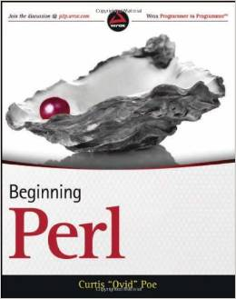
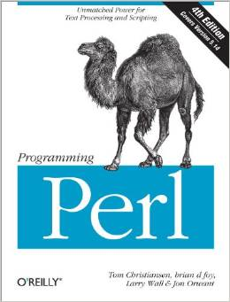
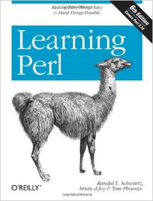

Its easy if you have a good book:



Note Learning Perl uses the deprecated '&' function call syntax
All Perl programs start with:
#! /usr/bin/env perl
Hard coding to /usr/bin/perl is normally a bad idea.
(you will be kicking your self if you ever change to a perl that isn't in /usr/bin/)
strace test6.pl
execve("./test6.pl", ["./test6.pl"], [/* 51 vars */]) = 0
/*...a bunch of missing lines...*/
execve("/opt/perl/current/bin/perl", ["perl", "./test6.pl"] ) = 0
/*Perl binary is interpreting now*/
readlink("/proc/self/exe", "/opt/perl-5.20.0/bin/perl", 4095) = 25
/*...a bunch of missing lines...*/
open("./test6.pl", O_RDONLY) = 4
/*...a bunch of missing lines...*/
read(4, "#! /usr/bin/env perl \n\n#commten\n"..., 8192) = 47
read(4, "", 8192) = 0
close(4)
rt_sigaction(SIGHUP, NULL, {SIG_DFL, [], 0}, 8) = 0
rt_sigaction(SIGINT, NULL, {SIG_DFL, [], 0}, 8) = 0
/*'test6.pl' actually only prints 'test' to stdout*/
write(1, "test", 4) = 4
This is what all perl programs should start with:
#! /usr/bin/env perl
use strict;
use warnings;
There are modules for this like "Modern::Perl" and "Common::Sense".
Syntax is made up of variables, functions, definitions, ect
Variables start with a Sigil
A Sigil is the leading punctuation of a variable.
Actually, all variables should start with the function 'my'
Functions start with the word sub
Starts with a sigil and has an identifier
'$' means Scalar (Think $calar)
A scalar is a single value
Can be a number, string, or reference (address)
For a scalar, the type can be dynamically assigned (unlike C,Java,ect)
my $var = 'some string'; #defined with 'my'
$var = 100;
$var = 'Quote\'s are messy';
$var = "this has a new line at the end \n"; #escape sequence
$var = qq{let's use a quote operator};
$var = qq{same things again};
$var = q{'q' gives no interpolation to a $var};
If you didn't notice, the q// and single quote ' don't give variable interpolation.
In perl, an array is an ordered list of scalars.
Prefixed with '@'. (Think @rray)
Good for storing anything if you need to preserve order
In perl they are dynamically sized
my @stuff = ("hello", 1, "thing");
The 'quote words' operator can return a list
my @stuff = qw/ hello 1 thing/;
A single element is accessed just as any scalar value:
print $stuff[0]; #"hello"
$stuff[2] = 2;
print "@stuff\n"; #hello 1 2
You can also access in values offset from the end:
print $stuff[-1]; # 2
print $stuff[-2]; # 1
push: add element to the end
push(@arr, "my Item");
pop: remove and return element from the end
my $var = pop($arr);
shift: remove and return element from the beginning
my $var = shift(@arr);
unshift: add element to the beginning
unshift(@arr, "more txt");
for my $item (@arr){
print "$item\n";
}
foreach my $item (@arr){
print "$item\n";
}
for( my $i = 0; $i < @arr; $i++){
print "$arr[$i]\n";
}
foreach my $key (keys @arr) { #later versions only
print "$arr[$key]\n";
}
while(my $item = pop(@arr) ){
print "$item\n";
}